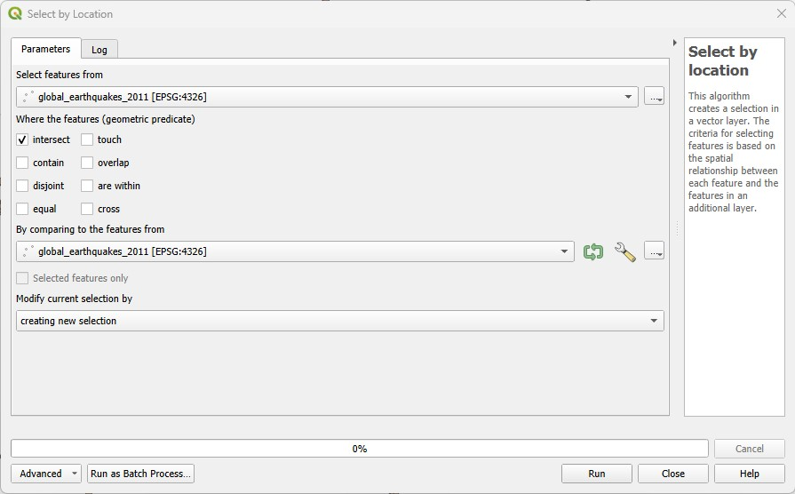

4 Lab 4: Working with vector geometries
The purpose of this lab is to continue developing your knowledge about vector spatial data and vector-based GIS operations. Today you will learn how to make selections based on the overlap of two vector layers - called spatial selection, location selection or spatial query. This is a powerful way to combine data from different sources to generate new information.
4.1 Before you start!
- Go through the Week 2 preparatory session on Canvas, and watch the seminar recording if you have missed it. Also make sure you have completed Lab 3.
4.2 Guided Exercise 1 - Spatial Queries
We will continue with the Earthquakes, Rivers and Countries dataset from the previous lab.
- If you have zipped your project from the last session, just unzip it and get to work. If not, then download the data again, and redo your project organization. As a reminder, the files to be loaded are:
global_earthquakes_2011.gpkg,MajorRivers.shp, andne_50m_admin_0_countries.shp.
For our next step in the analysis, we would like to focus only on earthquakes on land (i.e. not ocean). This information is not contained in the Earthquakes layer, but we do have a Countries layer that separates land from ocean. Could we use that to make a selection?
- Go to the menu
Vector > Research Tools > Select by Location..., or click on the button on the main QGIS toolbar. You will get this window:
button on the main QGIS toolbar. You will get this window:

Select the Earthquakes layer as
Select features from. Then check only theAre withinquery option. Then pick your World Countries layer forBy comparing to the fetaures from. ClickRun, and after it is finished, clickClose.Visually inspect the results of your selection, and then open the Attribute Table for the Earthquakes layer.
How many Earthquakes were originated on land in 2011?
Now that we identified the earthquakes on the continents, we may want to add this information to the Earthquakes layer as an attribute, in case we need the information later.
Still on the Attribute Table of the Earthquakes layer, open the
Field Calculator, and create a newText(string)field calledOrigin. Make sure the optionOnly update selected featuresis enabled this time. Then on the Expression window, just write'Land'. That means the wordLandwill be added as the attribute value for every selected feature.Now back on the Attribute Table window, click on the
Invert Selectionbutton ( ).
).Return to the
Field Calculatorand this time use theUpdate Existing Fieldoption to the right, instead ofCreate a new field. Make sure the optionOnly update selected featuresis still enabled. PickOriginas the field to be updated, and now just write'Ocean'on the Expression window. ClickOK.Now use the
Originattribute to style the colour or shape of your Earthquake points differently for land and ocean, using theSymbologyoptions. Pick theCategorizedsymbology option at the top, and then the set theValueto theOriginattribute, and thenClassify.
Do you understand why you did the steps above?
Now, let us find details about earthquake originating on a specific continent.
On the World layer, use Attribute selection (as in Exercise 3) to select all countries from South America. Then go to
Vector > Research Tools > Select by Location...and select all Earthquakes thatare withinthe Countries layer (same process as above), but this time make sure you turn on the optionSelected features only.Another way to make a selection ‘permanent’ is to export it as a new layer. While you still have the above selection on, right-click on the Earthquakes layer name and choose
Export > Save selected features as.... Name your exported file asLand_earthquakes_2011_south_america. Choose an appropriate folder to save it within your project structure by clicking on the...button to the left of the file name box, and select your format of choice (geopackage or shapefile). Click onOK. Save your project.
4.3 Guided Exercise 2 - Geometry-based attribute calculations
Another way to relate geometries to attributes is when we want to store some property of the geometry as an attribute itself, such as area, length or perimeter. QGIS also has tools for that.
As an example, let us calculate the areas and border length (perimeter) of all the World’s countries.
- Before using any of the geometry-based operators, we need to set up our desired units for the project. Go to the menu
File > Properties...to open your project properties. Then on theGeneraltab, set theUnits for distance measurementtoKilometersand theUnits for area measurementtoSquare Kilometers(yes, we will use SI units because we scientists!).
It is always important to think about your problem before choosing the units for length and area calculations. In this case, using the default of meters and squared meters would not make sense for things as large as countries.
Now open the Attribute Table for the Countries layer and launch the
Field Calculator. Create a new attribute calledArea_km2(it is always a good idea to add the units to the name to avoid any confusion) that is a decimal number with two decimal places. Then on the centre panel, find and expand theGeometryheading, and double click on the$areaoption to add it to the expression window. Then click onOKto calculate the field.Remember to deactivate editing mode!
What is the difference between
$areaandarea? Hint: look at the help text on the right panel.Why should we use
$areainstead ofareahere?
- Now repeat the process above, and calculate
Per_kmas a new attribute, using the$perimeteroperator (we use it instead ofperimeterfor the same reason above).
The perimeter/area (PA) ratio is often used as a measurement of polygon complexity. Can you answer which country has the most complex border in the world?
Good job! You now know all you need to query, create, delete, update and summarise attributes. You will use these tools a lot whenever you are doing any GIS work, so it is important to know them well.
To further solidify your knowledge, do the Independent Exercise below, which reviews all your learning from the past week and this week.
4.4 Independent Exercise - Supporting Wildcat conservation in Scotland.
You want to investigate how priority areas for wildcat conservation (WPAs) overlap with protected areas, and the risk of wildcat roadkill.
For that, obtain the following layers from the NatureScot Open Data Hub. Get them in shapefile format.
- Wildcat Priority Areas (WPA)
- Sites of Special Scientific Interest (SSSI)
Then obtain the Open Roads layer for all of the UK from the Ordnance Survey OS Open Data hub (it is a large file and it may take a while to download).
Finally, obtain the UK country boundaries from the Global Administrative Boundaries (GADM) hub. Get the GeoJSON file at Level 1 (Level 0 is the UK border without countries, level 1 is countries, level 2 is counties/council areas, etc.)
Organize the data and create a new project where you load all four datasets. Order and style them as you prefer. Then:
Answer the questions:
- What is the data model of each layer?
- What is the file format of each layer?
- What is the CRS of each layer?
- How many features does the WPA dataset have?
- How many attributes does the WPA dataset have?
The UK boundaries file has a different CRS from the rest, and it also contains all countries. Reproject this layer to the same CRS as the other layers, and then create a new layer containing the Scotland boundary only. Remove the UK layer from the project after that.
The roads layer covers all of the UK, making it very heavy and slow to use. But our analysis concerns Scotland only, so create a new layer containing only the road links (lines) inside the Scottish boundaries. Remove the full UK layer from the project after that.
The attribute
Shape_Areaof the WPA dataset does not indicate any units. It is always useful to have field names that hint at the unit for the values, making the data more self-explanatory. Recalculate the area of each WPA in square km, naming the new field ‘Area_km2’. Then delete the ‘Shape_Area’ attribute from the dataset to avoid confusion for future users.The Sites of Specific Scientific Interest (SSSIs) are a category of protected area in Scotland. These may offer additional protection to wildcats. Find all the SSSIs that overlap with WPAs, and create a new layer containing only these sites. Then calculate the total area of these SSSIs.
A major threat to wildlife is roadkill. Using the OS Open Data Open Roads dataset, answer the questions below:
How many road segments overlap with WPAs? (Create a new layer containing only, the selected data, to use below).
What is the total length of roads within WPAs?
Not all roads present the same risk. In the UK, roads are classified as:
- Motorways: high-speed expressways typically reserved for longer journeys between major cities;
- A roads: major roads intended to provide large-scale transport links;
- B roads: roads intended to connect different areas, and to feed traffic between A roads and smaller roads on the network;
- Classified Unnumbered – smaller roads intended to connect together unclassified roads with A and B roads, and often linking a housing estate or a village to the rest of the network;
- Unclassified – local roads intended for local traffic. The vast majority (60%) of roads in the UK fall within this category.
What is the total length per road class for all roads intersecting WPAs?
You will notice a ‘problem’ with the terms used in the road classification attribute - its unique values don’t match the terms above. You will need to create a new field called class_fix that keeps the classification of Motorway A, B, Classified Unnumbered and Unclassified unchanged, but changes the records labelled as both Not Classified and Unknown to Unclassified.
Along with road class, the length of the road segment is also important in determining overall traffic speed. To take that into consideration, select all roads within WPAs that are of either Motorway, A or B class and have 100m or more in length. Create a new layer from this selection.
GIS analyses will almost always have a visual component, as maps are a natural way to tell a ‘spatial story’. To finalise your exercise, organise and style your layers to show, in the most readable way possible (i.e. think about orders, line colours, widths and styles, fill colours, etc):
- The Scottish boundary;
- The WPAs;
- The boundaries of the SSSIs, distinguishing between those that do and do not overlap with WPAs;
- All Scottish roads differentiated by class using line width;
- All the road segments that are Motorways, A or B roads within WPAs that are longer than 100m. These should use the same line widths as above to differentiate road class, but have a different colour from other roads.